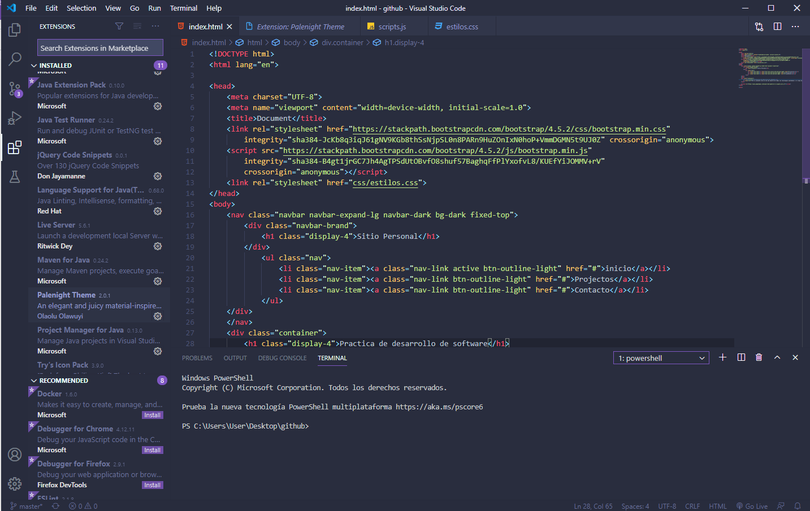

En el presente sitio se da una muestra de todas las tecnologias aprendidas a lo largo de la carrera de ingenieria de sistamas, utilizando lenguajes de programacion como java, javascript y python. tambien se incluye el desarrollo de sitios web con tecnologias como jsp, flask, jquery, sql, mysql, html, css y javascript.
